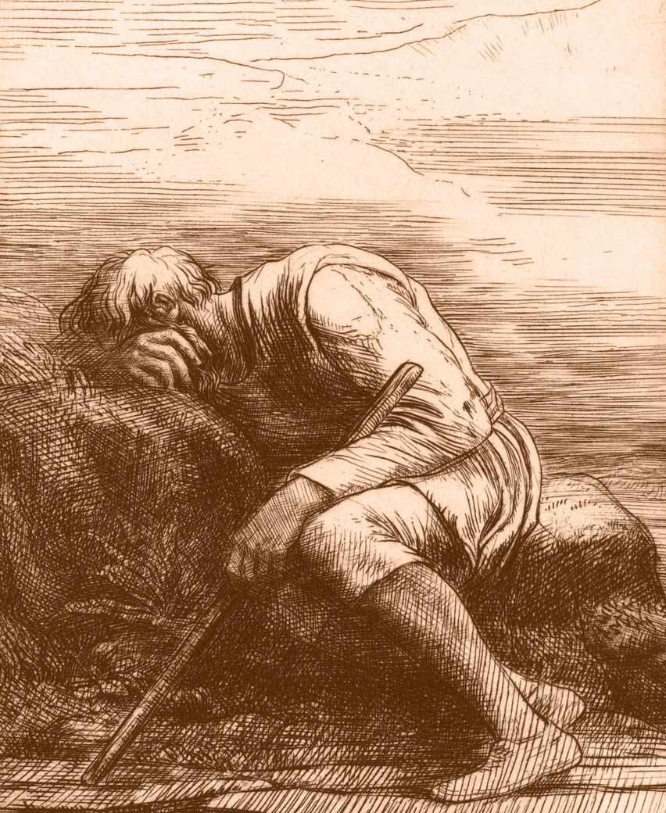

Qué Hacer Inmediatamente Después de la Ruptura
Como todo el mundo, hice precisamente lo incorrecto en las primeras horas después de que mi pareja me dejó. Suplicaba. Rogaba. Salí huyendo, regresé, entonces salí huyendo de nuevo. Hice docenas de llamadas sin parar. Le envié locuras por SMS. Lloraba como una Magdalena. Quería matarme. Estaba segura de que mi vida se había terminado.
Este sitio web es una guía larga y detallada de cómo superar lo más rápido posible la pena de ser abandonado/a tras una ruptura o divorcio y de qué hacer para que tú y tu vida sean más fuertes y mejores debido a la experiencia. Espero que puedas beneficiarte con las palabras de cada artículo del sitio.
Sin embargo en las primeras horas después de una ruptura amorosa, sé que estás muy impactado/a y apenas puedes funcionar. Por lo tanto te doy aquí un breve plan de emergencia describiendo lo que debes hacer inmediatamente, empezando ahora mismo. Cuanto más fiel seas al plan ahora, cuanto mejor será tu vida después.
Corta el contacto con tu pareja. Es urgente. Cualquier contacto sólo será malo. Estás tan afectado/a en el momento que todo lo que digas o hagas sólo empeorá la situación.
Nada de llamadas, nada de mensajes de texto. Sin ninguna comunicación en absoluto. Bloquea al ex en todos los medios de comunicación social.
Repito: nada. Una política de no contacto, ni una palabrita.
Si tu ex intenta contactarte, no contestes. Simplemente énviale un mensaje de texto muy breve: "Perdona, pero no puedo hablar en el momento. Te contacto cuando esté listo/a."
Sólo eso, no más.
Y apaga el teléfono o bloquea su número.
Entiendo que parece frío, pero no te olvides: rompió contigo. No tienes ninguna oblicación hacia tu ex. Tu corazón está adolorido y cualquier contacto personal solo te llevará a más dolor.
Y en la medida que haya cualquier posibilidad de reconciliación, una política ahora mismo de no contacto te ayudará muchísimo en el futuro y te impedirá hacer cualquier cosa de que te vayas a arrepentir.
Llama a amigos o familiares y pide su ayuda.No debes estar a solas. Aléjate físicamente de tu pareja. Si viven juntos, prepara equipaje y alójate con amigos o familiares. Si trabajas con tu pareja, tómate el día libre y vete inmediatamente.
No te viajes.Si vas a encontrarte con amigos o familiares, está bien. Da un paseo si te apetece. Pero nada de manejar un coche sin rumbo fijo; no estás en un estado de conducir un auto. Un espontáneo viaje sin objetivo sólo te complicará tu vida aun más.
Nada de violencia.Nada contra tu pareja, nada contra ti mismo. Si piensas en el suicidio, entiendo, yo también pensaba igual. Por favor léete todo este sitio de principio a fin; creo que te ayudará entender mejor lo que te está pasando.
No saltes en los brazos de otra persona.No te dará consuelo, no te servirá ni para ti ni para la venganza, y te puede causar problemas graves para ti, para tu pareja y para la tercera persona. Puedes pensar más tarde en relaciones de consuelo (relaciones clavo), pero solo será un desastre si empiezas en el periodo inmediatamente posterior a la ruptura. Alójate con amigos, no con un amante.
Alcohol, drogas, comida. Todos tenemos nuestra salida preferida. Luego no debes hacer nada de eso. Pero en las primeras horas o día después de una ruptura sentimental, es bastante irrealista sermonearte que no lo hagas. Pues solo con moderación. No manejes. Y alójate con un amigo.

Si ya sigues todos estos pasos, enhorabuena. Ya lo haces mejor que el 99% de las personas después de una ruptura. Te ayudará muchísimo.
Cuando me dejó, odiaba todas las perogrulladas y clichés que todos me dijeron que ya me irá bien. Pues no te voy a avisar así.
En su lugar, simplemente te consejo que leas este sitio web cuando estés listo/a y aprende sobre la fisiología de lo que sufres, cómo sobrellevar el dolor, y los pasos para sentirte mejor. Usa la barra de comandos abajo para ir a la lista principal de temas, o empieza directo con el primer artículo.